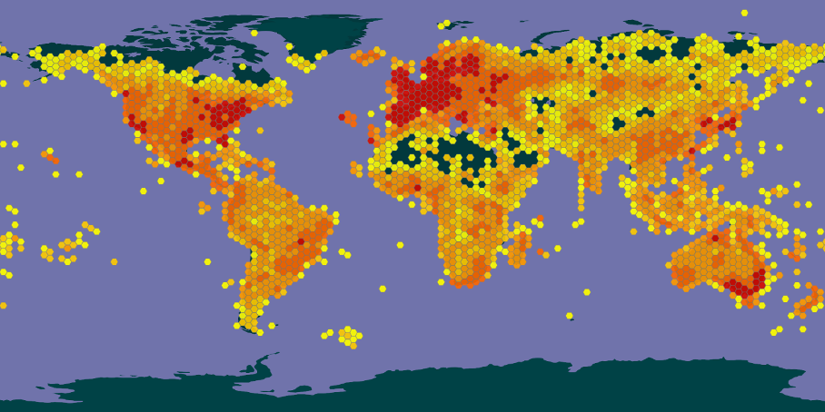
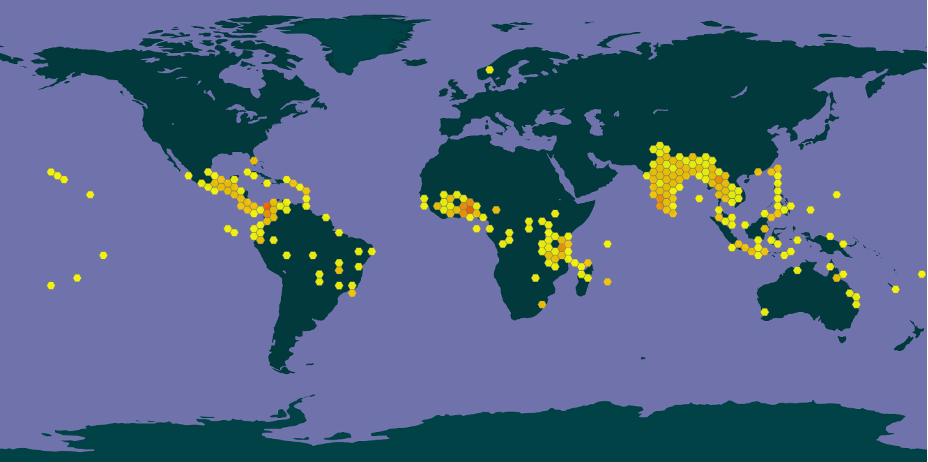
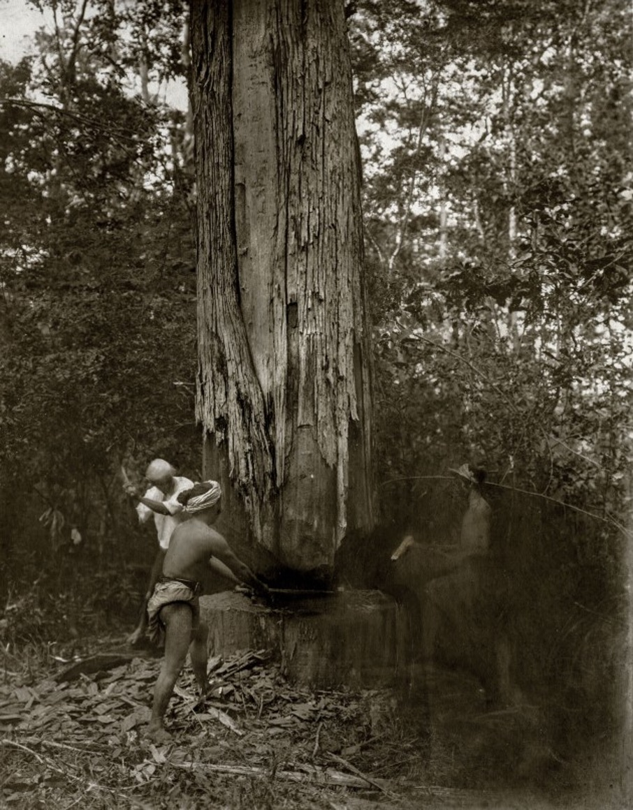
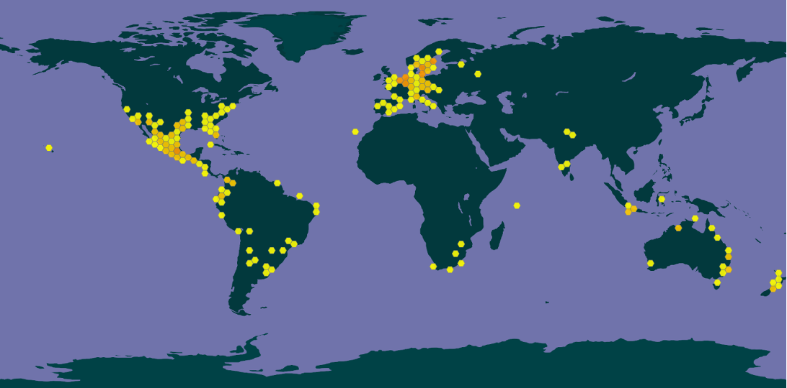
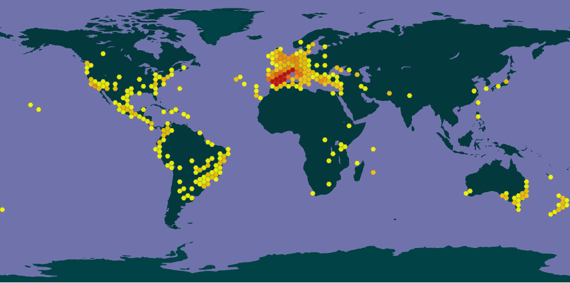

Figure 5: Illustration from the Florentine Codex (c. 1575–1577 or 1578–1580) depicting
women grinding seeds of chia to make chiapinolli. Reproduced from Knez Hrnčič et al., 2019.
Lamiaceae (also Labiatae in older literature, or colloquially the mint family) is an expansive family of flowering plants made up of 250 genera and over 7000 species (Stankovic, 2020).

Lamiaceae species have square stems and usually opposite leaves (Glimn-Lacy & Kaufman, 2006). They occupy a wide range of habitats, and many have cosmopolitan distributions (Stankovic, 2020). Most are herbs and shrubs, although the family also contains a few trees and vines (Glimn-Lacy & Kaufman, 2006). These plants are most frequently aromatic, and many are used in cooking and perfumery (Stankovic, 2020). Many plants in the Lamiaceae also have potent antioxidant, antimicrobial, and antiviral properties, and are used in pesticide and pharmaceutical industries (Ibid.).
The Lamiaceae Family contains numerous species with great sociocultural and economic importance. In ancient Greece and Rome, mint plants (the genus Mentha) were used in funerary rites (Miller, 2020). Biblical reference to mint suggests that it was highly valued and used as ‘tithes by the Pharisees along with anise and cumin’ (English Standard Version Bible, 2018, Matthew. 23). Marjoram (Origanum majorana) has ethnomedicinal uses in Iran, Azerbaijan, England, Egypt, India, Austria, Turkey, and Morocco (Bina & Rahimi, 2017), while garden sage (Salvia officinalis) does in much of India and Southeast Asia, Europe, Mediterranean countries, and Latin America (Sharma et al., 2019).
This paper will survey three different kinds of economic uses for three different plants in the Lamiaceae family: teak (Tectona grandis), chia (Salvia hispanica), and rosemary (Salvia rosmarinus).
Teak (Tectona grandis) is a large deciduous tree native to the tropical regions of South and Southeast Asia (Moya et al., 2014). It grows naturally in India, Laos, Myanmar, and Thailand and is cultivated in tropical climates worldwide primarily for high-end timber (Ibid.).

Like most other Lamiaceae species, teak tree leaves alternate in opposite facing pairs (Rahman, 2003). These are generally elliptic or obovate (think of the outline of an egg with the narrow side at the base of the leaf) (Ibid.). Teak trees flower from June to August or September (depending on climate and region) in 60 cm to 90 cm long densely branched inflorescences of radially symmetrical pale white flowers with 5 to 6 stamens (Rahman, 2003). They are known to grow up to 50 m tall and over 60 cm in diameter (Ibid.) although plantation trees are typically cut down before they reach this height and girth (Agri Farming, 2015).
Teak wood is famously used in boatbuilding for its combination of strength, flexibility, and resistance to rot and pests (Rahman, 2003). The wood’s density and grain make it easy to work with (Ibid.), and, furthermore, it dries without losing its shape, is almost fully impermeable, and the oleoresins it contains protect metal nails, bolts, and other metal parts from rust and erosion at sea (Aubaile-Sallenave, 2021). There is archaeological evidence that teak wood was used for boat construction as early as the first century BCE: excavations in Pattanam, in the Indian State of Kerala recovered remains of a wooden boat almost 6 m long, with teak wood bollards (Sidebotham, 2011). By the sixth century BCE, teak wood’s use in ship building was widespread throughout China, Persia, and the Arabian Peninsula (Aubaile-Sallenave, 2021). In the latter, it was used extensively in mosques and other religious buildings, including Masjid al-Haram, and the holiest monument in Islam, the Ka’bah (Ibid.).
The history of teak exploitation is deeply entwined with the history of European colonialism. Over the course of several centuries, European chartered companies such as the British Borneo company exploited teak in Southeast Asia, often at great cost to the indigenous populations and governments (Saha, 2016). In colonial Burma, the teak trade saw startling mortality rates from anthrax outbreaks, and widespread opium addiction in elephants and their riders (Ibid.). The extensive British exploitation of Indian teak from 1793 to 1815 gave the British navy a military advantage over its neighbours (Sérougne, 2020) which the British empire pressed against France during the seven Anglo-French wars of this period (Ibid.).

Due to the wood’s high price, its primary use until the mid-20th century remained in large shipbuilding projects (Aubaile-Sallenave, 2021), and to this day, it is considered a luxurious wood. Although its contemporary uses in boat building are greatly diminished (Ibid), it is now broadly used to manufacture consumer goods and infrastructure. For example, to make high-end furniture, or, in India and Bangladesh to build bridges, telephone poles, and railway sleeper wagons (Rahman, 2003).
Modern commercialised teak is primarily sourced from plantations which are grown worldwide in tropical climates (The Wood Database, n.d.). There are currently at least thirteen major teak cultivars (Agri Farming, 2018). Despite the success of teak silvicultural practices, old-growth teak is still sought after for its supposed superior quality (Salopek, 2020). Historical and present-day logging of natural teak forests has caused extensive deforestation (United Nations, 2012). In 2012, prompted by the continued dwindling of natural old-growth teak forests in the tree’s native range, the United Nations Food and Agriculture Organization called for countries to implement measures to preserve natural teak forests (Ibid.). Despite legal measures in Myanmar, India, Thailand, and Laos which outlaw the felling and export of natural forest-grown teak wood (Pradhan, 2015), illegal logging continues to threaten the sustainability of teak forests in Southeast Asia (Salopek, 2020).
Chia (Salvia hispanica) is an annual herbaceous plant indigenous to southern Mexico and Guatemala (Motyka et al., 2022). It grows in tropical and subtropical climates, especially in mountainous areas with acidic loam soils and good drainage (Ibid.). Chia is cultivated industrially in Central and North, South America, Europe, and Australia (Ibid), primarily for the culinary uses of its seeds (Knez Hrnčič et al., 2019). Several cultivars of Chia exist (Atamian, n.d.), although documentation regarding them is rather scarce. Yue et al., 2022 refers to six of them, and the University of Kentucky’s Centre for Crop Diversification has patented “long day length flowering lines of chia capable of producing seed in the Commonwealth and the Midwest (University of Kentucky, n.d.)”.

Figure 4: Worldwide distribution of chia (GBIF Backbone Taxonomy, n.d.)
Chia plants grow to a height of up of 60 cm in optimal conditions (Agri Farming, 2018), with opposite decussate[[1]](#_ftn1) elongated and serrated lime-green leaves, each 3 cm to 5 cm wide by 4 cm to 8 cm long (Motyka et al., 2022). They flower approximately four months after germination, usually in the late spring or summer (Agri Farming, 2018) in whorls of small purple or white flowers (Motyka et al., 2022). Chia seeds are 1 mm to 2 mm long, oval, and vary in shade from white to black (Ibid.). They can be uniform or speckled (Ibid.). They are notoriously hydrophilic, able to absorb water up to 12 times their own mass, which encases them in a gelatinous substance called mucilage (Ibid.).
Chia was an important crop in pre-Columbian Mesoamerican societies, with many culinary, religious, medicinal, and artistic uses (Knez Hrnčič et al., 2019). These uses were almost completely lost during colonial rule (Anacleto et al., 2018). This survey will focus on the food uses of the chia plant, which we can break up into the following categories: whole seeds, seed flour, seed mucilage, and seed oil, the first three of which at least were known by pre-Colombian Mesoamerican peoples (Ibid.). Among other culinary practices, the Aztecs frequently roasted and ground the seeds into a flour called Chianpinolli which could be incorporated into tortillas, tamales, and beverages called Chianatoles (Ibid.).
Figure 5: Illustration from the Florentine Codex (c. 1575–1577 or 1578–1580) depicting
women grinding seeds of chia to make chiapinolli. Reproduced from Knez Hrnčič et al., 2019.
Chia’s use declined sharply throughout the seventeenth, eighteenth, and nineteenth centuries with the decline of the Mexica population under colonial Spanish rule, the repossession of chia’s cultivated area by other plants and animal species imported by European colonists, and the dietary changes of indigenous peoples caused by the “availability of new food products” (Anacleto et al., 2018). In The chia (Salvia hispanica): past, present and future of an ancient Mexican crop, Anacleto et al. (2018) write, “In only three centuries the chia crop [had] almost become an unknown specie[s]”, and “The damage caused by the Spanish domination was so extensive, that after cultivating 30,000 ha of chia in 1550, this area decreased to a few hectares in 1810”.
Thanks to the work a small number of farmers in the Mexican States of Jalisco, Guerrero, and Puebla who demonstrated the feasibility of commercial chia cultivation from the 1930s to the 1990s, and growing interest worldwide for sources of omega-3 fatty acids, interest in chia resurged in the late 1990s and 2000s (Anacleto et al., 2018). Marketed as a superfood (The Nutrition Source – Harvard School of Public Health, 2018), chia seed exploded in worldwide popularity starting in 2010 (Anacleto et al., 2018). Its common contemporary culinary uses include making drinks, puddings, replacing eggs in baking, and in salads (The Nutrition Source – Harvard School of Public Health, 2018).
Rosemary (Salvia rosmarinus, or Rosmarinus officinalis in older literature) is a fragrant and flavourful winter-hardy evergreen shrub (Leplat, 2017). It grows natively in southern Europe and the Mediterranean region (Kew, n.d.) and is cultivated worldwide in Mediterranean and temperate climates as a herb used in flavouring, perfumery, and medicine (Leplat, 2017). In its southern European native range, rosemary is easily wild crafted[[2]](#_ftn1) and is a prevalent garden herb (Ibid.). There are at least 20 cultivars of the plant, characterised by different taste profiles and yields of medicinal components (Ibid.). Most commercialised rosemary is now cultivated (Ibid.).

Figure 6: Worldwide distribution of rosemary (GBIF Backbone Taxonomy, n.d.)
Rosemary typically grows to between 50 cm and 2 m tall, and spreads 1 m to 2 m horizontally (Ibid.). Its leaves are dark green, needle-like, sessile[[3]](#ftn1), and opposite decussate (Ibid.). Its leaves and stems are covered with a relatively thick and mostly gas- and water-impermeable cuticle, which helps the plant conserve moisture (Ibid.). Rosemary flowers in spring and early summer[[4]](#ftn2) (Kew, n.d.) in small groupings of three to four blue and white flowers near the top of the bush’s branches, at the base of some of the top leaves (Leplat, 2017).
While rosemary’s primary economic usage is as a flavouring, this survey will focus on its historical and contemporary medicinal uses. Recorded medicinal uses of rosemary date back at least to early classical antiquity (Leclerc, 1930). These early uses were often related to the plant’s religious associations. For example, in ancient Greece and Rome, where rosemary was used in funerary rites (Leplat, 2017), the Ancient Greeks and Romans interpreted the plant’s sturdy evergreen leaves as a symbol of immortality and memory beyond death, and used it as a herbal tonic to stimulate and promote memory (Ibid.). This use persists to this day, notably in Greek schools, where students drink rosemary tea or burn rosemary as incense in preparation for exams (Ibid.). Other ancient Greek and Roman uses of the plant included treatments against epilepsy, jaundice, and as a digestive aid (Leplat, 2017).
Pre-Islamic Arabs used rosemary as a diuretic, an emmenagogue[[5]](#ftn3), and as treatment to ease flatulence (Leclerc, 1930). In the fourth century AD, Arab scholars developed the process of steam distillation to extract herb essential oils (Leplat, 2017). The process reached western Europe in the twelfth century, and with it, the practice of extracting essential oil from rosemary (Ibid.). The latter fell in and out of fashion several times in subsequent centuries, reaching the peak of its European therapeutic reputation throughout the seventeenth century (Leclerc, 1930). Rosemary essential oil was then considered a panacea (Ibid.). Paraphrasing Leclerc: Rosemary essential oil was believed to spread its fragrance and spirituous parts[[6]](#ftn4) throughout the body, chasing away putrid and deadly vapours, to defend the heart against all miasmas, to make digestion perfect, comfort the languishing stomach, excite the appetite, stop vomiting, sharpen memory, awaken intelligence, chase away sadness, cause sleep, chase away winds, encourage conception, and open the ways to all excretions[[7]](#ftn5). Leclerc notes facetiously, “We can say seriously, in all of nature there is no remedy of such power.”[[8]](#ftn6)
The main contemporary ethnopharmacological uses of rosemary are to prevent spasms, as an analgaesic or anti-inflammatory, to treat anxiety, and to boost memory (Ghasemzadeh Rahbardar & Hosseinzadeh, 2020). Note worthily, these uses of rosemary are supported by recent scientific research, which finds that three of the plant’s chemical components, rosmarinic acid, carnosic acid, and rosemary essential oil provide, “promising natural medicines in the treatment of the nervous system pathological conditions including anxiety, depression, Alzheimer’s disease, epilepsy, Parkinson’s disease, and withdrawal syndrome” (Ibid.), although the study presently cited does stress the need for continued research.
This paper surveyed three plants from the Lamiaceae family and the economic uses of each. In this exploration, I hope to have highlighted the importance of the historical and cultural uses of these (and other) plants. Ethnobotanical relationships to plants, and culturally situated plant uses are the reward of centuries of empirical knowledge transfer and trial-and-error experimentations. These plants of the Lamiaceae family have been used by humans for millennia, and although their contemporary usages have changed, they remain of great cultural, historical, and economic importance.
[[1]](#ftnref1) “Leaves arranged along the stem in pairs, each pair at right angles to the pair next above or below.” (BIOTIK, n.d.)
[[2]](#ftnref1) I base this on my personal experience growing up in the plant’s endemic European range.
[[3]](#ftnref1) With no stalk.
[[4]](#ftnref2) Although in ideal conditions, it is known to flower year-round (Leplat,2017).
[[5]](#ftnref3) A substance used to promote or increase menstrual flow.
[[6]](#ftnref4) “parties spiritueuses” (Leclerc, 1930)
[[7]](#ftnref5) In French: “…répandant dans tout le corps son parfum et ses parties spiritueuses, elle chasse les vapeurs putrides et nocies et défend le cœur contre tous les miasmes.[…] rend la digestion parfaite, récrée et réconforte les estomacs languissants […] excite l’appétit, arrête le vomissement, aiguise la mémoire, provoque le sommeil, rend allègre, chasse la tristesse, éveille l’intelligence, […] chasse les vents, libère les oppilations, favorise la conception, expulse les sueurs et l’urine, ouvre les voies à toutes les excretions” (Leclerc, 1930)
[[8]](#ftnref6) In French: “On peut le dire sérieusement, dans toute la nature il n’est pas de remède d’une telle puissance” (Leclerc, 1930)
Agri Farming. (2015, March 17). Teak Wood Farming (Sagwan), Planting, Care, Harvesting. Agri Farming. https://www.agrifarming.in/teak-wood-farming
Agri Farming. (2018a, July 14). Teak Wood Farming Project Report, Cost and Profit | Agri Farming. https://www.agrifarming.in/teak-wood-farming-project-report-cost-and-profit
Agri Farming. (2018b, September 21). Chia Seeds Cultivation (Sabja), Farming Practices | Agri Farming. https://www.agrifarming.in/chia-seeds-cultivation-sabja-farming
Anacleto, S., Ruiz-Ibarra, G., René, R., de la Torre, R.— R., Reyna, R., & López, A. (2018). The chia (Salvia hispanica): Past, present and future of an ancient Mexican crop. Australian Journal of Crop Science, 12, 1626–1632. https://doi.org/10.21475/ajcs.18.12.10.p1202
Aubaile-Sallenave, F. (2021). Le teck, Tectona grandis L.f., chez les Arabo-Musulmans du Moyen-Âge. Revue d’ethnoécologie, 20, Article 20. https://doi.org/10.4000/ethnoecologie.8651
Bina, F., & Rahimi, R. (2017). Sweet Marjoram: A Review of Ethnopharmacology, Phytochemistry, and Biological Activities. Journal of Evidence-Based Complementary & Alternative Medicine, 22(1), 175–185. https://doi.org/10.1177/2156587216650793
BIOTIK. (n.d.). Opposite-decussate. Retrieved 9 March 2023, from http://biotik.org/india/defs/opposite-decussate_en.html
Cahill, J. (2003). Ethnobotany of Chia, Salvia hispanica L. (Lamiaceae). Economic Botany, 57, 604–618. https://doi.org/10.1663/0013-0001(2003)057%5B0604:EOCSHL%5D2.0.CO;2057%5B0604:EOCSHL%5D2.0.CO;2)
English Standard Version Bible. (2018). Crossway.
Ghasemzadeh Rahbardar, M., & Hosseinzadeh, H. (2020). Therapeutic effects of rosemary (Rosmarinus officinalis L.) and its active constituents on nervous system disorders. Iranian Journal of Basic Medical Sciences, 23(9), 1100–1112. https://doi.org/10.22038/ijbms.2020.45269.10541
Glimn-Lacy, J., & Kaufman, P. B. (2006). Botany Illustrated: Introduction to Plants, Major Groups, Flowering Plant Families (2nd edition). Springer.
Kew. (n.d.). Rosemary–Salvia rosmarinus | Plants | Kew. Retrieved 9 March 2023, from https://www.kew.org/plants/rosemary
Knez Hrnčič, M., Ivanovski, M., Cör, D., & Knez, Ž. (2019). Chia Seeds (Salvia Hispanica L.): An Overview–Phytochemical Profile, Isolation Methods, and Application. Molecules, 25(1), 11. https://doi.org/10.3390/molecules25010011
Leclerc, H. (1870-1955) A. du texte. (1930). Histoire du romarin / par le Dr Henri Leclerc. https://gallica.bnf.fr/ark:/12148/bpt6k859325t
Leplat, M. (2017). Le romarin, Rosmarinus officinalis L., une Lamiacée médicinale de la garrigue provençale. 227.
McVicar, J. (2004). La passion des herbes: Aromatiques, culinaires, médicinales, cosmétiques et comment les cultiver (L. M. Michel, Trans.). Guy Saint-Jean.
Miller, A. (2020, April 1). Plant of the Month: Mint. JSTOR Daily. https://daily.jstor.org/plant-of-the-month-mint/
Motyka, S., Koc, K., Ekiert, H., Blicharska, E., Czarnek, K., & Szopa, A. (2022). The Current State of Knowledge on Salvia hispanica and Salviae hispanicae semen (Chia Seeds). Molecules, 27(4), Article 4. https://doi.org/10.3390/molecules27041207
Moya, R., Bond, B., & Quesada, H. (2014). A review of heartwood properties of Tectona grandis trees from fast-growth plantations. Wood Science and Technology, 48(2), 411–433. https://doi.org/10.1007/s00226-014-0618-3
Pradhan, S. (2015). Teakwood–All hail the king of hardwoods. https://www.thedollarbusiness.com/magazine/teakwood-all-hail-the-king-of-hardwoods/11308
Rahman, P. D. M. A. (2003). Teak (Tectona grandis) Monograph (BSc Hons Final Year Project Thesis) (ix +69 pages) as pdf. https://www.academia.edu/43449357/TeakTectonagrandisMonographBScHonsFinalYearProjectThesisix69pagesaspdf
Saha, J. (2016, March 23). Teak and Photography in Colonial Burma. Colonizing Animals. https://colonizinganimals.blog/2016/03/23/teak-and-photography-in-colonial-burma/
Salopek, P. (2020, May 8). After a century of logging, Myanmar struggles to preserve its teak groves. History. https://www.nationalgeographic.com/history/article/after-century-logging-myanmar-struggles-preserve-teak-groves
Schneider, A. (2003). Arbres et Arbustes Thérapeutiques (L’HOMME edition). DE L HOMME.
Sérougne, L. (2020). À la conquête du teck. Guerres, impérialisme forestier et construction navale en Inde (1793-1815). Annales historiques de la Révolution française, 399(1), 123–152. Cairn.info.
Sharma, Y., Fagan, J., & Schaefer, J. (2019). Ethnobotany, phytochemistry, cultivation and medicinal properties of Garden sage (Salvia officinalis L.). 3139–3148.
Sidebotham, S. E. (2011). Berenike and the Ancient Maritime Spice Route. University of California Press.
Stankovic, M. (2020). Lamiaceae Species: Biology, Ecology and Practical Uses. MDPI.
The Nutrition Source – Harvard School of Public Health. (2018, March 19). Chia Seeds. The Nutrition Source. https://www.hsph.harvard.edu/nutritionsource/food-features/chia-seeds/
The Wood Database. (n.d.). Teak. Retrieved 23 February 2023, from https://www.wood-database.com/teak/
United Nations. (2012, March 26). UN food agency calls for measures to preserve natural teak forests | UN News. United Nations. https://news.un.org/en/story/2012/03/407272
University of Kentucky Center for Crop Diversification. (n.d.). Chia. Retrieved 3 April 2023, from https://www.uky.edu/ccd/production/crop-resources/gffof/chia
Yue, G. H., Lai, C. C., Lee, M., Wang, L., & Song, Z. J. (2022). Developing first microsatellites and analysing genetic diversity in six chia (Salvia hispanica L.) cultivars. Genetic Resources and Crop Evolution, 69(3), 1303–1312. https://doi.org/10.1007/s10722-021-01305-2